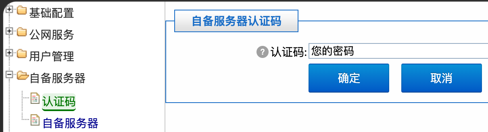

配置路径: "自建服务器-认证码"

配置视图： config-view -> xnetc-view
使用示例:
xnetc-view>pn auth token 123456 xnetc-view>no pn auth token
命令说明:
| pn auth token %PASSWORD | 设置认证码 |
| no pn auth token | 取消认证码 |
当使用自己的服务器作为公网转发节点时，建议您配置自建服务器的密码。客户端和服务器上配置的密码保持一致即可。
如果您未在服务器上设置密码，则任何都可以将您的服务器作为他的公网转发节点。
配置服务器上的密码，请参见 服务端配置 中的 "配置PN Auth Token"